EXPLORAR · MOVIMENTAR
Pegue o Ovo
Busque os ovos no subsolo ou na pirâmide do Egito. Depois, encontre o caminho de volta antes que o guardião alcance você.
Encontrar no catálogo ↗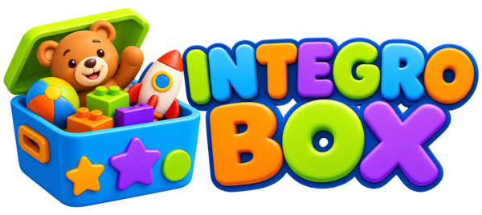
Do tabuleiro de xadrez a uma corrida contra o guardião do ovo, descubra os jogos criados pelo Instituto Integro.
Cadastro gratuito · sem mensalidade · compras opcionais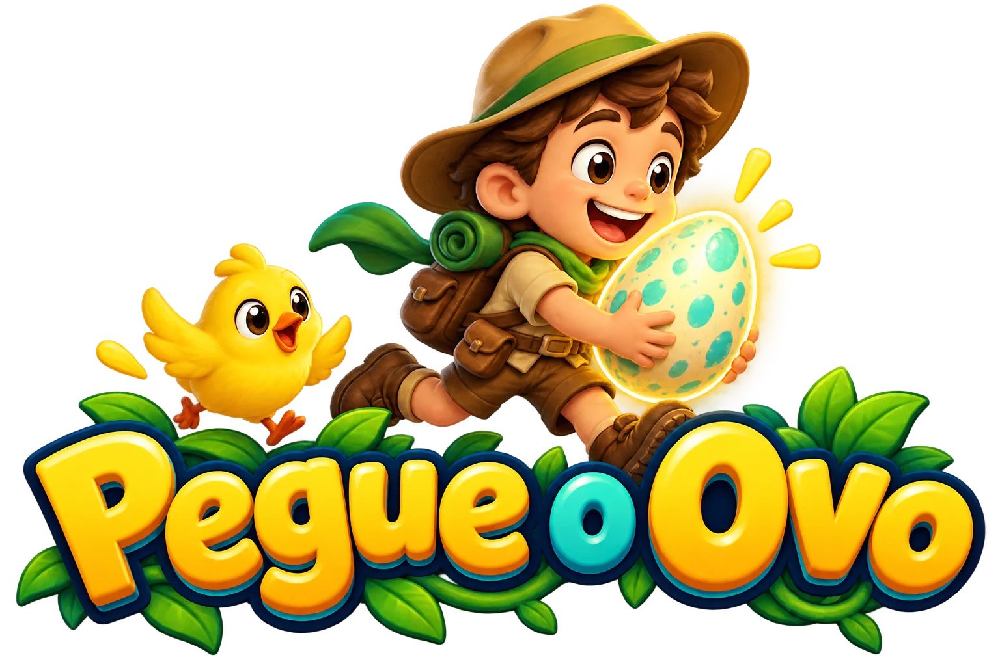
Pegue o OvoConhecer o jogoExplore por tipo de jogo ou entre no catálogo para começar uma partida.
Busque os ovos no subsolo ou na pirâmide do Egito. Depois, encontre o caminho de volta antes que o guardião alcance você.
Encontrar no catálogo ↗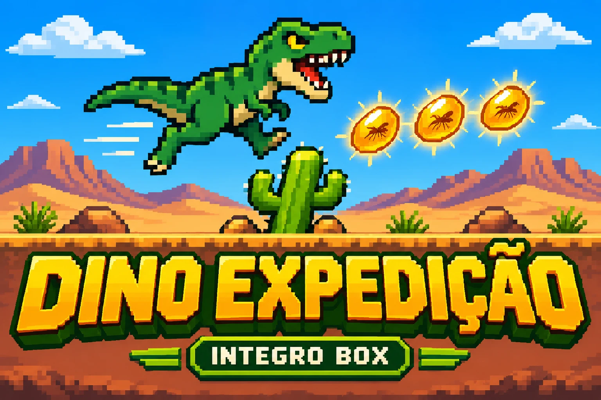
Salte cactos e cristais, recolha âmbares e dispute o ranking geral em seis fases.
Ver cartaz do Dino ↗ Encontrar no catálogo ↗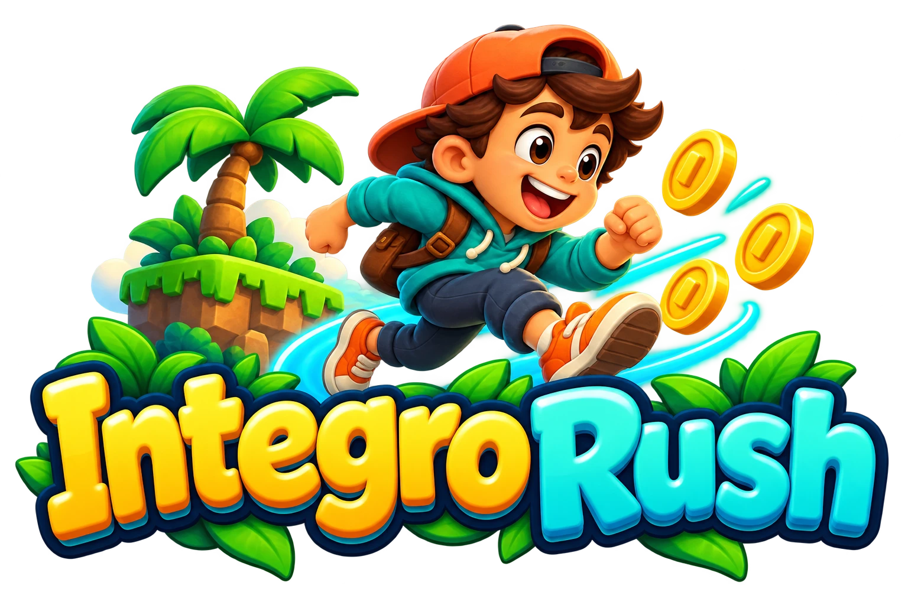
Quinze expedições por ilhas, ruínas, neve, vulcões e céus. Pule, deslize, colete moedas e personalize seu explorador com 24 acessórios.
Encontrar no catálogo ↗
Coma peixes menores, cresça por 60 evoluções e descubra seis regiões. Colete pérolas e equipe seu tubarão na Loja das Marés.
Encontrar no catálogo ↗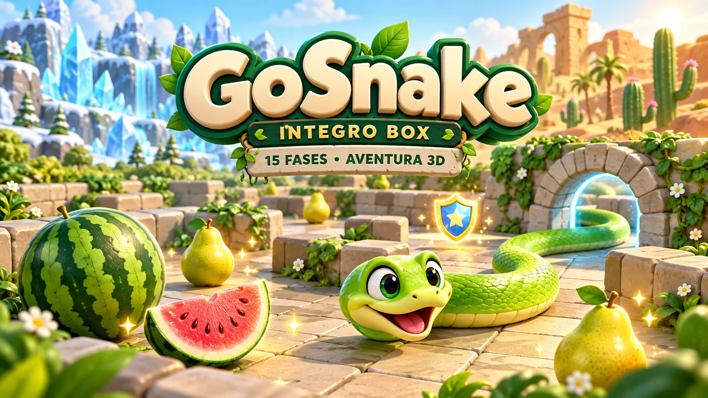
Guie a cobra por 15 fases em arenas 3D. Colete melancias e peras, atravesse túneis e descubra poderes.
Encontrar no catálogo ↗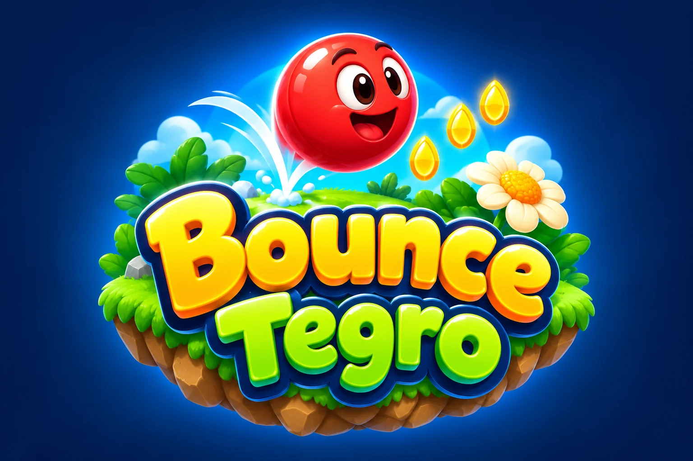
Role, pule e explore cinco mundos coloridos. Encontre cristais, use flores de impulso e atravesse plataformas móveis até o portal.
Encontrar no catálogo ↗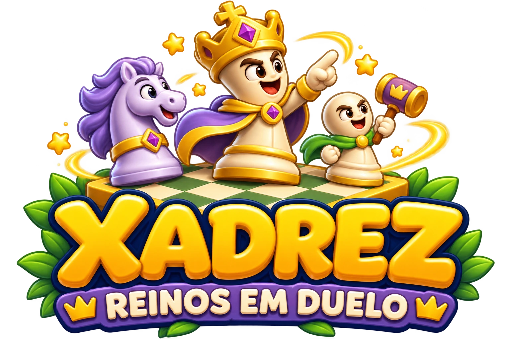
Cada captura vira uma pequena batalha! Peças cartoon, seis golpes especiais e partidas contra o computador ou com alguém no mesmo aparelho.
Encontrar no catálogo ↗
Planeje, encaixe e teste. Resolva 24 desafios de equilíbrio, pontes, cores e vento ou solte a imaginação na construção livre.
Encontrar no catálogo ↗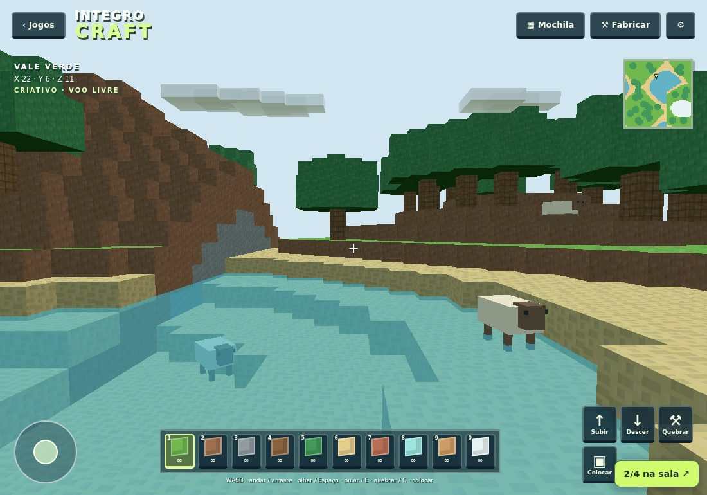
Transforme ideias em construções, explore o terreno e invente novas possibilidades.
Encontrar no catálogo ↗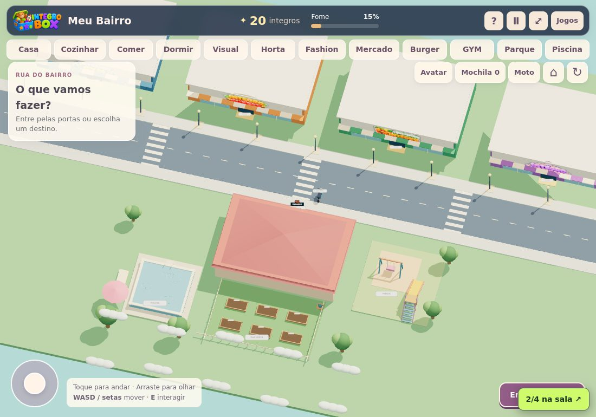
Passeie, cuide da horta e visite diferentes lugares em uma aventura do cotidiano.
Encontrar no catálogo ↗
Existe um infiltrado na nave Integro. Explore sete cômodos, complete tarefas, investigue sabotagens e vote! Jogue sozinho com bots ou em salas para até seis pessoas.
Encontrar no catálogo ↗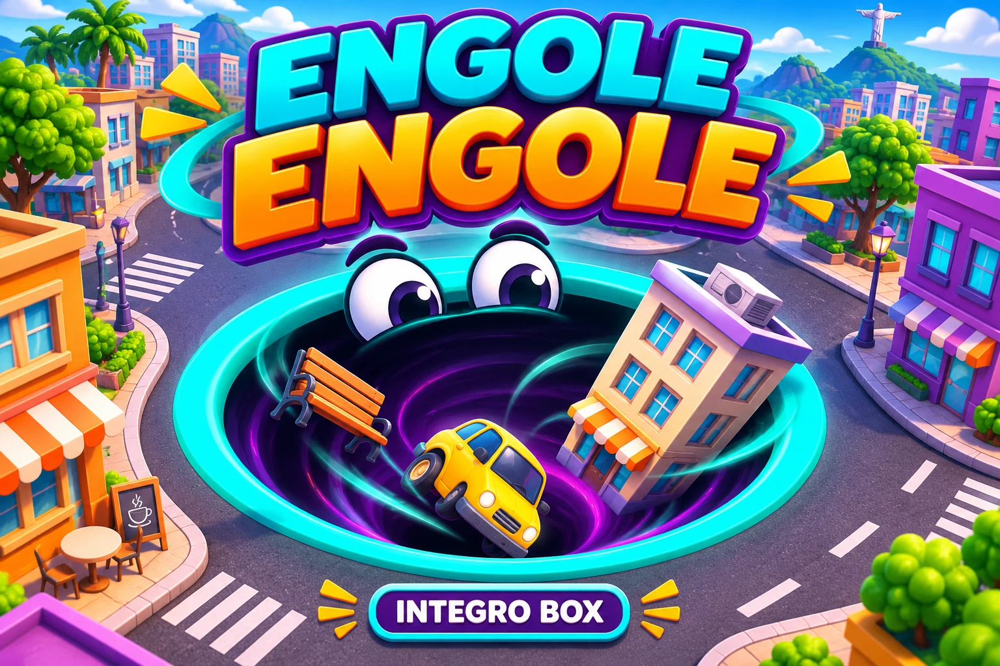
Uma cidade inteira para engolir. Cresça em partidas de dois minutos, sozinho ou em salas para até 8 pessoas.
Encontrar no catálogo ↗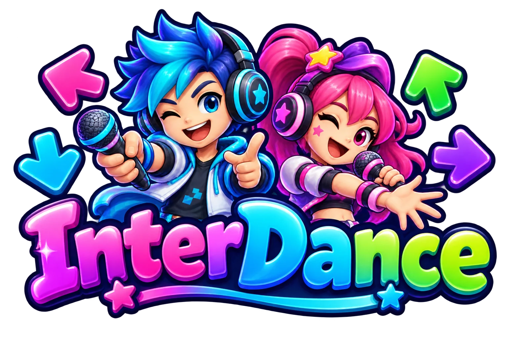
16 semanas musicais, personagens cartoon e batalhas de ritmo. Desafie alguém no mesmo aparelho com o novo modo versus.
Encontrar no catálogo ↗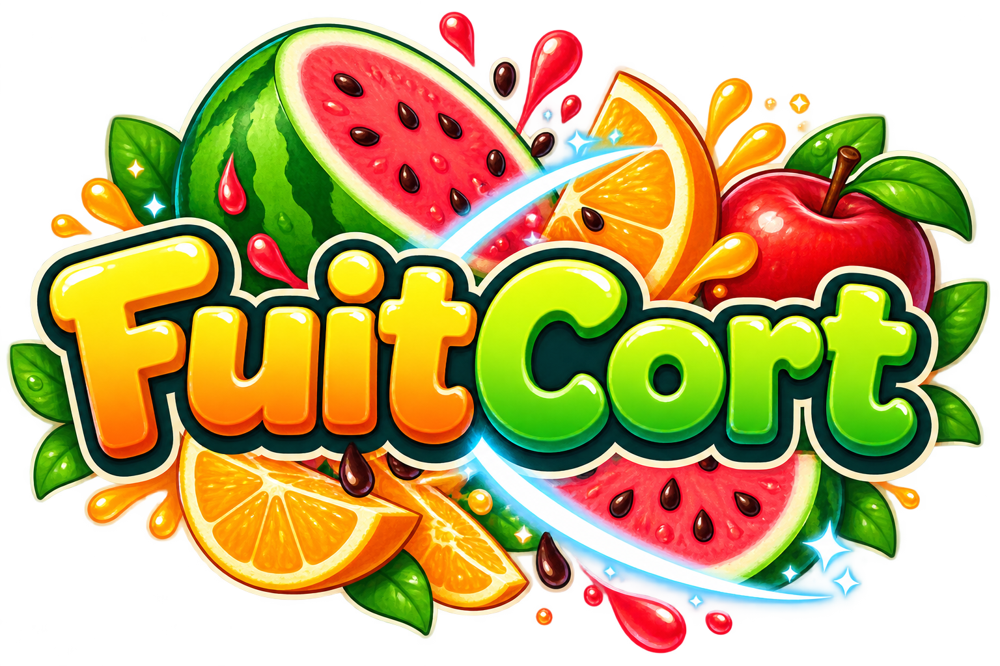
FuitCort, Torre da Matemática, desafios de palavras, memória, robótica e outras descobertas esperam no menu.
UM NOVO BRILHO NA SUA AVENTURA
Gemas para escolher auras, companheiros e itens raros em todos os jogos. Você compra o item que vê e ele fica na sua coleção.
1 IntGem grátis por dia: entre e complete 5 minutos de uso ativo. As raridades custam 4, 7 ou 12 IntGem.
1 IntGemR$ 1,00
5 IntGemR$ 2,99
10 IntGemR$ 6,99
20 IntGemR$ 10,99
Compras avulsas por Pix, com QR Code e copia e cola pelo Asaas. Sem mensalidade. No Pegue o Ovo, você também pode converter Integros com cotação variável e limites diários apresentados na carteira.
Conhecer a coleção ◆CUIDADO TAMBÉM FAZ PARTE DO JOGO
Um ambiente com contas individuais e chat com moderação. As salas exibem apelidos de explorador. Para crianças, recomendamos que o responsável acompanhe o cadastro, as conversas e as compras opcionais.
Combine o tempo de tela, faça pausas e acompanhe as primeiras aventuras. Nas salas públicas, outros usuários autenticados podem entrar. Prefira salas privadas por convite para jogar apenas com conhecidos.
Vamos brincar? ↗PARA OS RESPONSÁVEIS
Crie uma conta gratuita com seu e-mail, confirme pelo link recebido e entre para jogar. Quem já tem login do Instituto pode continuar usando a mesma conta. Não há assinatura mensal.
Falar com o Instituto →O InterDance tem versus local para duas pessoas no mesmo aparelho, com WASD, setas ou controles de toque.
O Descubra! tem salas públicas ou por convite para até seis pessoas, com bots nas vagas livres. Abra o jogo e escolha Salas online. Pegue o Ovo, Meu Bairro e IntegroCraft têm salas públicas e privadas para até quatro contas. No botão Salas, escolha o mundo e entre em uma sala pública ou crie a sua. As públicas recebem outros usuários autenticados, inclusive desconhecidos. Para jogar apenas com conhecidos, crie uma sala privada e compartilhe o código. Quem criou pode remover participantes ou encerrar a sala.
No IntegroCraft, o grupo constrói em um mundo temporário da sala. Nos demais jogos, os personagens se encontram enquanto cada um mantém seus próprios desafios e conquistas. O chat de texto passa por moderação. Não há chamadas de voz.
Há controles de toque e teclado. Os mundos 3D precisam de um navegador atualizado e de um aparelho compatível com WebGL. O modo com amigos também precisa de conexão com a internet.
A carteira IntGem, sua coleção e o progresso sincronizado do Pegue o Ovo ficam na sua conta online. Outros jogos também usam este navegador para guardar progresso; limpar os dados pode removê-lo. As construções multiplayer são temporárias e duram enquanto a sala estiver ativa.